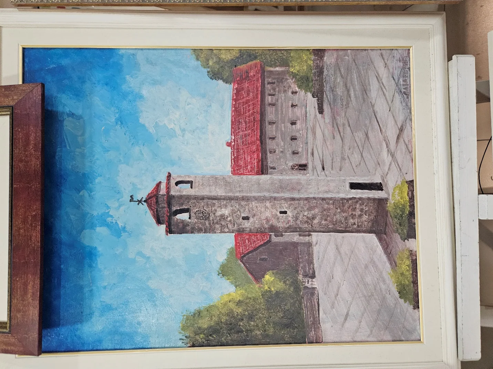
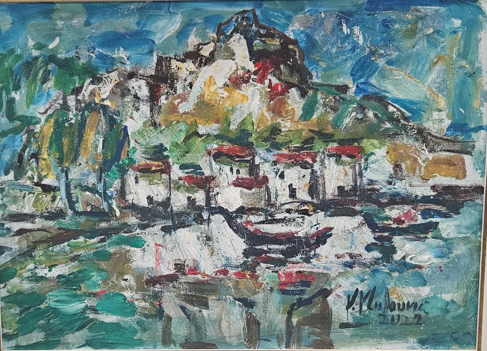

KULTURNI PROJEKAT / 2026U sjenci platna
U sjenci platna
i riječi.
Digitalna zbirka o umjetničkom stvaralaštvu, kulturnoj baštini i susretu srpske i crnogorske kulturne scene.
15biografskih cjelina
53ilustracija iz izvora
49stranica dokumenta

01 / Dokumentovana umjetnost
TEMATSKE CJELINE
Sve teme ↗Priče koje čuvaju identitet.
LJUDI I STVARALAŠTVO
Sve biografije ↗Autori i umjetnici.
ORIGINALNA DOKUMENTACIJA
Pogledajte likovnu i fotografsku građu.
Galerija uključuje sve slike izdvojene iz dostavljenog dokumenta, sa prikazom originalnog konteksta.
Otvori galeriju ↗